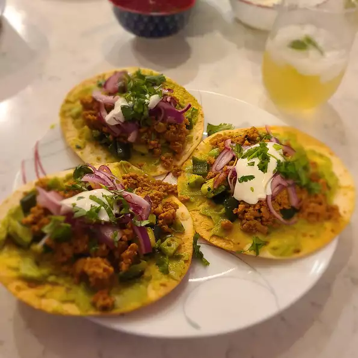

Crispy Ground Turkey Tostadas

Description
This is a faster, and less expensive lasagna.These fresh, delicious crispy ground turkey tostadas are made with lots of taco spices, sassy poblano, and tasty pickled red onions.
Ingredients
- 1 red onion, halved and thinly sliced
- ¼ cup Mexican crema
- 2 limes
- ¼ teaspoon salt
- 2 tablespoons vegetable oil, divided
- 1 chayote - peeled, halved, seeded, and diced into 1/2-inch pieces
- 1 poblano pepper - seeds and white ribs removed, diced into 1/2-inch pieces
- 6 (6 inch) flour tortillas
- 6 sprigs cilantro, minced, divided
- 1 pounds ground turkey
- 3 tablespoons taco seasoning mix
- 1 cup guacamole
- ½ cup shredded Cheddar cheese
Steps
- Preheat the oven to 375 degrees F (190 degrees C).
- Place red onion slices and crema in separate small bowls. Zest limes into another small bowl. Halve limes and squeeze juice into a fourth small bowl.
- Stir 1 teaspoon lime juice into the bowl of crema. Add the remaining lime juice to the bowl with the red onions; stir in 1/4 teaspoon salt and let marinate at room temperature until pickled, at least 20 minutes.
- Heat oil in a skillet over medium heat. Add chayote and poblano pepper; cook, stirring constantly, until golden and tender, about 10 minutes.
- Coat tortillas on both sides with cooking spray. Place tortillas on a large baking sheet.
- Bake in the preheated oven until crisped and lightly brown, 8 to 10 minutes.
- Stir the lime zest, 1/2 the cilantro, onion powder, and 1/4 teaspoon salt into the chayote-poblano mixture. Pour mixture into a bowl.
- Spread guacamole over each crisped tortilla; top with chayote-poblano mixture, ground turkey, pickled onions, lime crema, and remaining cilantro.